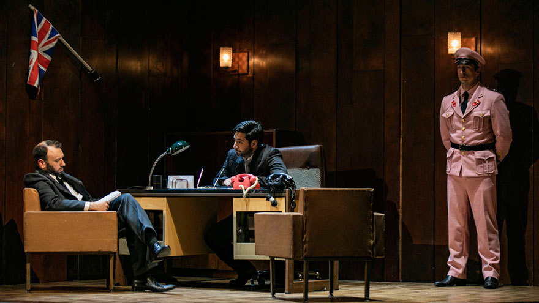

Όπερα
Οι γαμοι του Φιγκαρο
Βόλφγκανγκ Αμαντέους Μότσαρτ
Οι γάμοι του Φίγκαρο, η αριστουργηματική όπερα του Βόλφγκανγκ Αμαντέους Μότσαρτ, επιστρέφει στην Εθνική Λυρική Σκηνή σε μια νέα εντυπωσιακή παραγωγή, σε σκηνοθεσία Αλέξανδρου Ευκλείδη. Από τις 27 Μαρτίου 2019 και για οκτώ παραστάσεις, στην Αίθουσα Σταύρος Νιάρχος της Εθνικής Λυρικής Σκηνής στο Κέντρο Πολιτισμού Ίδρυμα Σταύρος Νιάρχος, σε μουσική διεύθυνση Μάριου Παπαδόπουλου και Γιώργου Μπαλατσινού.
Οι γάμοι του Φίγκαρο πρωτοπαρουσιάστηκαν στη Βιέννη το 1786, τρία χρόνια πριν τη Γαλλική Επανάσταση. Το κείμενο του Λορέντσο ντα Πόντε, που βασίζεται στην πεντάπρακτη κωμωδία του Μπωμαρσαί Η τρελή ημέρα ή Ο γάμος του Φίγκαρο, απηχεί την ταραγμένη εποχή και την ένταση στις σχέσεις των διαφορετικών κοινωνικών τάξεων: του Κόμη και της Κόμησσας, και των υπηρετών τους Σουζάννας και Φίγκαρο. Συγκεκριμένα, η υπόθεση των Γάμων αφορά την προσπάθεια του Φίγκαρο και της Σουζάννας να πραγματοποιήσουν τον γάμο τους παρά τα εμπόδια που θέτει ο Κόμης.
Η αριστουργηματική μουσική του Μότσαρτ σκιαγραφεί με λιτά μέσα τον χαρακτήρα κάθε προσώπου. Εκτός από τις συνήθεις άριες για κάθε ρόλο και τα μεταξύ τους ντουέτα, ο συνθέτης δημιουργεί σύνολα απίστευτης φαντασίας, όπως το περίφημο σεπτέτο της Β΄ Πράξης: αρχικά ένα, στη συνέχεια δύο, τρία, τέσσερα, πέντε, έξι και τελικά επτά πρόσωπα συνομιλούν στη διάρκεια ενός συναρπαστικού μουσικού μέρους, το οποίο διαρκεί είκοσι λεπτά, χωρίς να χάνει την ευκρίνεια και τη δύναμή του. Πάνω απ’ όλα όμως, πρόκειται για ένα έργο του οποίου οι χαρακτήρες είναι κατεξοχήν ανθρώπινοι, με όλες τους τις όψεις, τις θετικές αλλά και τις σκοτεινές, να προβάλλονται ισότιμα στο φως.
Ο Μότσαρτ επιτυγχάνει να φωτίσει από πολλές διαφορετικές πλευρές τα πρόσωπα του έργου μέσα από την ορχήστρα, η οποία αναλαμβάνει σταθερά πρωταγωνιστικό ρόλο, καθώς το ύφος της μουσικής –νοσταλγικό, ζωηρό, αγωνιώδες, θυελλώδες ή ιλαρό– μας αποκαλύπτει περισσότερα για τον χαρακτήρα, τις σκέψεις και την ποιότητα των συναισθημάτων τους. Αλλά και το ποιητικό κείμενο του Ντα Πόντε έχει ζωηρό θεατρικό ρυθμό: οι απρόσμενες καταστάσεις έρχονται πάντα στην κατάλληλη στιγμή. Ακόμα και οι γελοιογραφικές υπερβολές, όπως, λόγου χάριν, η παρωδία έργων όπου «χαμένοι» συγγενείς ξαναβρίσκονται μετά από δεκαετίες, εντάσσονται με μεγάλη τέχνη. Με το μοναδικό δέσιμο ανάμεσα σε λόγο και μουσική, με τη νέα ισορροπία ανάμεσα σε κωμικά και σοβαρά στοιχεία, με την πρωταγωνιστική θέση που δίνουν στη μουσική, οι Γάμοι του Φίγκαρο ήταν πράγματι αυτό που ο Ντα Πόντε ονόμασε «ένα νέο είδος θεάματος» και άνοιξαν νέο κεφάλαιο στην ιστορία του λυρικού θεάτρου.
Στην ευρηματική σκηνοθεσία του διακεκριμένου σκηνοθέτη και Καλλιτεχνικού Διευθυντή της Εναλλακτικής Σκηνής της ΕΛΣ Αλέξανδρου Ευκλείδη, οι λεπτές αποχρώσεις της μουσικοθεατρικής ιδιοφυΐας του Μότσαρτ αναδεικνύονται μέσα σε ένα κινηματογραφικό σκηνικό που συνθέτει ένα σύμπαν ρετρό παραδοξότητας. Οι ήρωες του Μότσαρτ μετατρέπονται σε γρανάζια ενός αλλόκοτου κόσμου που υπογραμμίζει τη διαχρονική πάλη για κοινωνική ανέλιξη και αξιοπρέπεια.
Τη δραματουργία υπογράφει η Αγγέλα Σαρόγλου η οποία συνεργάστηκε και στη σκηνοθεσία της παραγωγής. Το σκηνικό που χρησιμοποιεί πλήρως τις δυνατότητες των μηχανισμών της αίθουσας Σταύρος Νιάρχος, υπογράφει ο Γιάννης Κατρανίτσας, ενώ τα vintage κοστούμια η Ιωάννα Τσάμη και τους φωτισμούς η Μελίνα Μάσχα.
Τη μουσική διεύθυνση της παραγωγής υπογράφουν οι διακεκριμένοι αρχιμουσικοί Μάριος Παπαδόπουλος και Γιώργος Μπαλατσινός. Τη Χορωδία της ΕΛΣ διευθύνει ο Αγαθάγγελος Γεωργακάτος.
Στις δύο υψηλού επιπέδου διανομές, το κοινό θα έχει την ευκαιρία να απολαύσει νεότερους και καταξιωμένους Έλληνες πρωταγωνιστές, όπως τους Δημήτρη Τηλιακό, Μαρία Μητσοπούλου, Βασιλική Καραγιάννη, Παναγιώτη Οικονόμου, Άρτεμη Μπόγρη, Διονύση Σούρμπη, Μυρσίνη Μαργαρίτη, Χρύσα Μαλιαμάνη, Γιάννη Σελητσανιώτη, Μιράντα Μακρυνιώτη κ.ά.